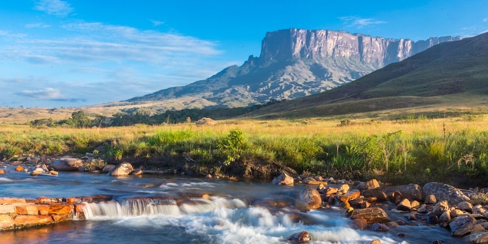

La Historia territorial de Venezuela, como en la mayoria de los países hispanoamericanos se inicia con la conquista y colonización europea de su territorio. Venezuela comienza a ser explorada después de 1498 cuando fue visitada por Cristóbla Colón en su cuarto y ultimo viaje. Las primeras poblaciones establecidas por los españoles en Venezuela fueron: La Isla de Margarita (en la parte insular) y Cumaná (en tierra firme) todo esto en el oriente Venezolano. Mientras que en el área occidental venezolana se dieron las primeras divisiones territoriales: La provincia de Margarita (1525), la Provincia de Venezuela (1528) y la Provincia de Nueva Andalucía cuya capital era Cumaná(1568). En 1570 se crea la provincia de La Grita. En 1777 fue creada la Capitania General de Venezuela, jurisidiccion bajo la cual se unieron la provincias de Caracas, Cumaná, Guyana, Margarita, Maracaibo y Trinidad. En 1811 con los primeros brotes revolucionarios contra el gobierno español, se proclaman las provincias de Barcelona, Barinas y Trujillo. Con la independencia se modificó la división territorial al convertirse Venezuela en departamento de la Gran Colombia. Los Departamentos de subdividieron en provincias, las provincias en cantones y los cantones en parroquias.
Día de la Independencia de la República Bolivariana de Venezuela
La independencia de Venezuela fue el proceso jurídico-político desarrollado entre 1810 y 1830 con el fin de romper los lazos que existían entre la Capitanía General de Venezuela y el Imperio español. También implicó el reemplazo de la monarquía absoluta por la república como forma de gobierno en Venezuela. La independencia de Venezuela produjo el conflicto armado conocido como Guerra de Independencia de Venezuela entre los ejércitos independentista y realista.
Causas
Entre los factores influyentes se destacan el deseo de poder de los grupos sociales criollos que poseían el estatus social y económico pero no político, el descontento de la población por los malos manejos y por el alza de los impuestos, la introducción de las ideas del Enciclopedismo, la Ilustración, la declaración de Independencia de los Estados Unidos, la Revolución francesa, la Revolución haitiana y el reinado de José I de España.
Antecedentes
A finales del siglo XVIII tienen lugar los primeros conatos independentistas en Venezuela. El primero de ellos intenta dos veces en 1806 invadir el territorio venezolano por La Vela de Coro, liderado por el general Francisco de Miranda, con una expedición armada proveniente de Haití. Sus incursiones terminan en fracasos por la prédica religiosa en su contra y la indiferencia de la población. La Conjuración de los Mantuanos fue un movimiento que estalló en Caracas en 1808. Los mantuanos, quienes constituían el grupo social más poderoso de la sociedad, encabezaron un intento para constituir una Junta de Gobierno que rigiese los destinos de la Capitanía General de Venezuela a raíz de la invasión de España por Napoleón.
Sitios Turisticos de Venezuela
- Canaima
- La Gran Sabana
- Salto Ángel
- Monte Roraima
- Río Orinoco
- Auyantepuy
- Parque La Llovizna, una caída de agua del Río Caroní
- Tobogán de la Selva
Los Simbolos Nacionales venezolanos son:
- La bandera de Venezuela
- El himno nacional
- EL escudo nacional